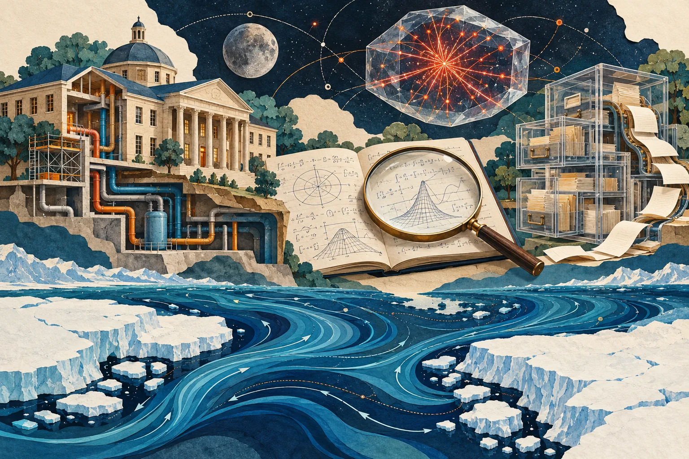

Independent daily digestFive stories worth your time
The Daily Curiosity
The most consequential systems are often the ones we barely notice. Today: the buildings behind a college education, the human work of checking AI discoveries, the filing machinery behind political transparency, crystals that remember space radiation, and an ocean connection that may help explain ice ages.

AI-generated editorial illustration · The Daily Curiosity. Imagined scenes; not an actual campus, scientific diagram or mission photograph.
STORY 01 · Higher education · Infrastructure
A $4 billion repair backlog is part of the price of keeping college open
Louisiana’s public colleges face more than $4 billion in deferred maintenance, according to a consultant presentation reported by Higher Ed Dive on October 26. The state’s regents voted to request $702.1 million for more than 70 capital projects in fiscal 2028, while the analysis estimates that clearing the backlog and meeting new needs would require $777 million annually for a decade. Those are funding requests and estimated needs, not money already delivered; the larger lesson is that educational capacity depends on maintaining existing buildings as well as opening new programs.
Source published 2026-10-26 · Briefing date 2026-10-28
An AI proof still needs a community that can understand it
OpenAI’s October 26 announcement of claimed results in mathematics, computer science and physics also introduces three different approaches to releasing and explaining AI-generated research. The company is publishing the mathematics output directly, pairing public computer-science materials with an expert working group, and leaving the physics materials’ release to a separate collaboration. The revealing question is how a machine-produced argument becomes shared scientific knowledge: researchers need access, time to check claims, and explanations they can build on. The announcement itself acknowledges unequal early access as a tradeoff; these claims should not be read as this publication’s independent verification of the proofs.
Source published 2026-10-26 · Briefing date 2026-10-28
An election filing outage shows why availability is a civic concern
The Federal Election Commission’s incident log records an electronic-filing outage beginning October 26 and says a fix was being implemented at 8:17 p.m. Eastern on October 27; its homepage still displayed an offline notice when checked for this edition. The affected services include online forms, electronic submissions and filing-vendor tools, the machinery that brings new campaign-finance reports into the public record. With the election approaching, the disruption illustrates how a service outage can delay transparency even when the underlying task is administrative rather than casting ballots. The official incident notice does not identify a cause or confirm restoration, so neither is assumed here.
Source published 2026-10-27 · Briefing date 2026-10-28
Tiny crystals bring home a record of radiation near the Moon
An October 22 report from Poland’s Institute of Nuclear Physics describes a new way to read fluorescent lithium-fluoride detectors flown around the Moon on the uncrewed Artemis I mission in 2022. Radiation leaves microscopic tracks in the crystals that can be examined with a fluorescence microscope, avoiding the chemical etching used for conventional plastic track detectors. After corrections, the researchers report agreement within 15 percent of conventional detectors over their overlapping measurement range, along with tracks below the older detectors’ threshold. The advance is a method for extracting more useful exposure measurements from small passive sensors, not evidence that lunar radiation is harmless; the mission date and this month’s analysis are distinct.
Source published 2026-10-22 · Briefing date 2026-10-28
Northern ice may help the Southern Ocean lock away carbon
An October 28 University of St Andrews research summary describes simulations in which cooling northern latitudes changes distant Southern Ocean circulation and increases ocean carbon storage. In the model, cooling only the far north produced 74 percent as much carbon-dioxide drawdown as cooling the entire planet, suggesting a mechanism connecting northern ice sheets with Antarctic ocean changes. That offers a testable link between two pieces of the ice-age puzzle and a reminder that the carbon cycle responds to connections across oceans. The result comes from an idealized simulation reported in the Journal of Climate, rather than a direct measurement of ancient carbon removal or a forecast of today’s climate.
Source published 2026-10-28 · Briefing date 2026-10-28